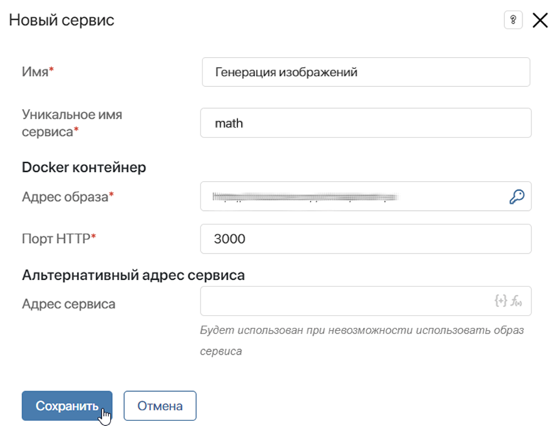
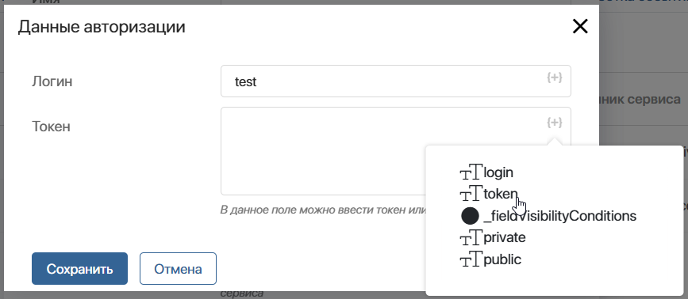
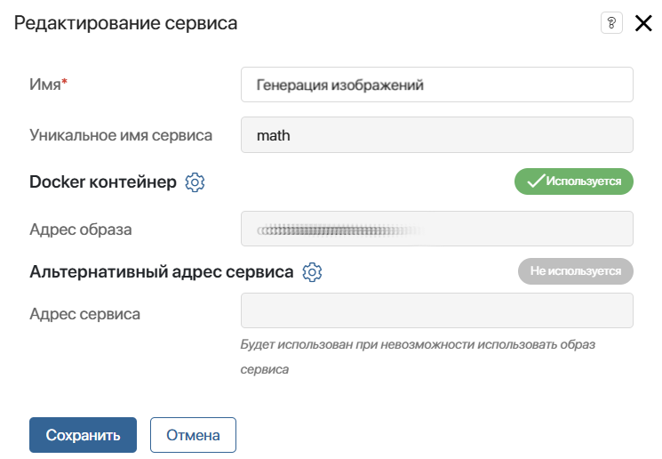
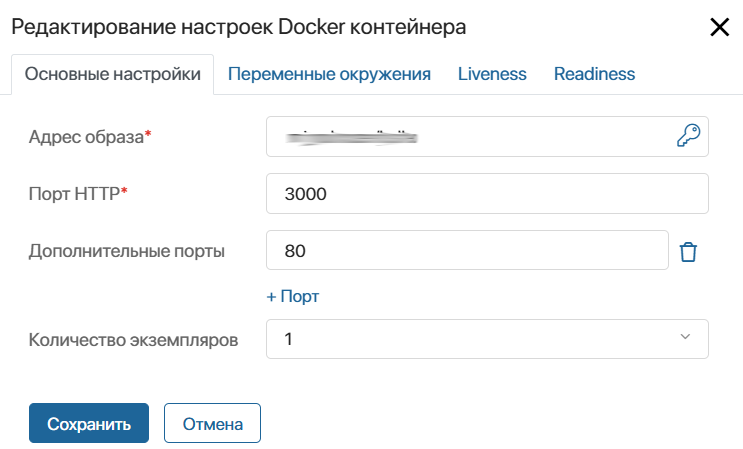
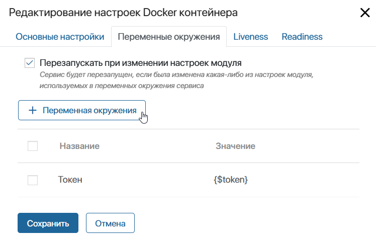
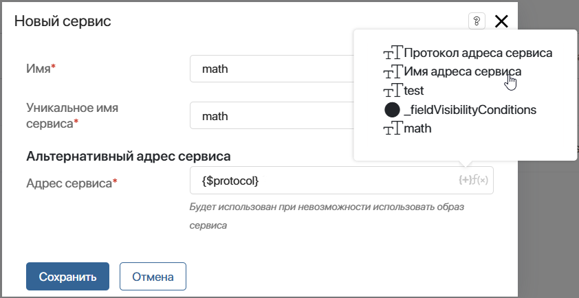
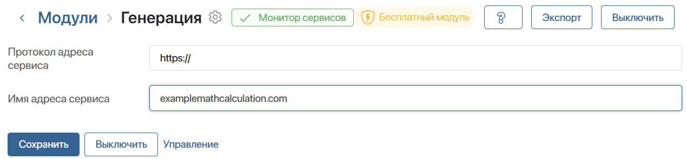
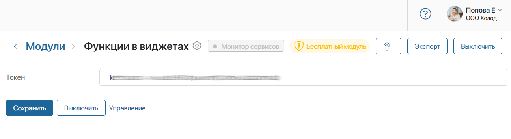

Переносимые сервисы позволяют интегрировать микросервисы в пользовательские модули, расширяя их функциональные возможности.
Подключить переносимый сервис в модуле можно несколькими способами. Нужный вариант выбирается в зависимости от среды размещения самого микросервиса, а также используемой поставки ELMA365. При создании сервиса вы можете передать в модуль:
- адрес образа микросервиса, размещённого в публичном или приватном репозитории Docker Hub, его внутренние настройки и конфигурации для работы в кластере. Такой способ используется в поставках, поддерживающих развёртывание сервиса в среде исполнения Kubernetes: ELMA365 On‑Premises и SaaS Enterprise;
- альтернативный адрес сервиса, установленного на внешнем хостинге с публичным доступом. Способ доступен для всех поставок, но зачастую применяется в облачной поставке ELMA365 SaaS Standard, где нельзя обеспечить работу образа сервиса.
В этой статье рассмотрим процесс создания сервиса в пользовательском модуле.
Подробнее об использовании микросервисов в разработке пользовательских решений читайте в статьях:
- особенности переносимых сервисов и пример использования — «Переносимые сервисы в модулях»;
- реализация проверки стабильного подключения сервиса — «Пример использования Readiness проверки в переносимых сервисах»;
- включение переносимых сервисов в ELMA365 Enterprise — «Включение переносимых сервисов»;
- разработка собственного микросервиса — «Рекомендации по разработке микросервисов для переносимых сервисов».
Добавить и настроить переносимый сервис
- Откройте страницу пользовательского модуля, в котором подключается переносимый сервис, и перейдите в Управление.
- На вкладке Сервисы нажмите кнопку + Сервис и заполните основные настройки в открывшемся окне:

- Имя* — название сервиса, отображаемое в списке на странице модуля;
- Уникальное имя сервиса* — имя, которое будет использоваться в коде или скриптах для обращения к сервису. Заданное при создании имя невозможно изменить в дальнейшем;
- Docker контейнер — в блоке настраивается размещение образа микросервиса в отдельном пространстве в среде исполнения Kubernetes. Настройка доступна в поставках ELMA365 On‑Premises и SaaS Enterprise:
- Адрес образа* — URL-адрес Docker‑образа сервиса. Для образа, расположенного в Docker Hub, допускается короткое относительное наименование. Когда для образа требуется аутентификация, нужно указать логин и токен учётных данных. Для этого напротив поля нажмите значок ключа и заполните форму одним из следующих способов:
- укажите логин и токен в строковом представлении. При экспорте модуля указанные значения сохраняются и передаются в открытом виде;
- чтобы предотвратить случайную утечку данных авторизации при экспорте модуля, используйте шаблонизированные переменные типа Строка (строка), созданные в виде параметров настроек модуля. Для этого нажмите значок {+} и выберите добавленное свойство.
- Адрес образа* — URL-адрес Docker‑образа сервиса. Для образа, расположенного в Docker Hub, допускается короткое относительное наименование. Когда для образа требуется аутентификация, нужно указать логин и токен учётных данных. Для этого напротив поля нажмите значок ключа и заполните форму одним из следующих способов:
В этом случае значения логина и токена указываются на странице подключения модуля, а не вводятся напрямую в окне Данные авторизации. При экспорте и последующем импорте модуля конфиденциальная информация не будет случайно передана, поскольку значения параметров настроек удалятся. При этом сами переменные для логина и токена сохранятся.

- Порт HTTP* — порт, через который будет происходить взаимодействие с микросервисом. По умолчанию указан порт 3000. При настройке ознакомьтесь с документацией микросервиса и определите, какой из портов следует выбрать.
- Альтернативный адрес сервиса — блок заполняется, если микросервис размещён и функционирует на стороннем сервере с публичным адресом доступа. Вы можете указать URL‑адрес сервиса одним из следующих способов:
- внести адрес в строковом представлении, например https://example.mathcalculation.com;
- использовать предварительно созданные параметры из настроек модуля и задать шаблон адреса. В этом случае, если компоненты адреса изменяются, вы сможете отредактировать значения параметров в модуле, а не настраивать подключение повторно.
Обратите внимание, если в поставках ELMA365 On‑Premises и SaaS Enterprise указать оба адреса, то будет использоваться адрес образа.
- Нажмите Сохранить.
- Откроется окно Редактирование сервиса, в котором можно:

- отредактировать или добавить адрес образа и порт, а также указать дополнительные настройки Docker‑контейнера. Например, можно задать количество экземпляров микросервиса, добавить переменные окружения, настроить Liveness- и Readiness‑пробы. Подробнее читайте в разделе «Настройки Docker‑контейнера»;
- отредактировать или указать публичный адрес сервиса, нажав значок шестерёнки справа от поля Альтернативный адрес сервиса. Чтобы адрес формировался на основе параметров модуля, для него можно задать шаблон. Подробнее читайте в разделе «Шаблон альтернативного адреса сервиса».
Настройки Docker-контейнера
В поставках ELMA365 On‑Premises и SaaS Enterprise образ микросервиса можно разместить в среде исполнения Kubernetes. Чтобы задать настройки развёртывания микросервиса, нажмите значок шестерёнки справа от названия блока Docker контейнер. В открывшемся окне настройка выполняется на нескольких вкладках: Основные настройки, Переменные окружения, Liveness, Readiness.
Вкладка «Основные настройки»

- Адрес образа*, Порт HTTP* — вы можете отредактировать адрес образа, логин и токен для доступа к репозиторию и порт подключения, указанные при создании переносимого сервиса;
- Дополнительные порты — вы можете указать для микросервиса дополнительные порты, с помощью которых другие микросервисы модуля смогут к нему обращаться. Для одного микросервиса доступно не более 10 дополнительных портов.
начало внимание
Чтобы указание дополнительных портов в настройках переносимых сервисов стало доступно, включите фича-флаг allowBabysitterOptionalPorts. Подробнее читайте в статьях «Изменение параметров On‑Premises Enterprise» и «Изменение параметров On‑Premises Standard». Если вы используете поставку SaaS Enterprise, для включения фича‑флага обратитесь к вашему менеджеру ELMA365.
конец внимание
- Количество экземпляров — укажите, сколько экземпляров микросервисов развернуть и запустить. При изменении количества следует учитывать, что в ELMA365 не поддерживается репликация сервисов. Если это не заложено в микросервис, то каждый из запущенных экземпляров не будет связан с остальными.
Вы можете настроить дополнительные параметры переносимого сервиса с помощью ConfigMap. Например, задать лимиты использования ресурсов и включить автомасштабирование микросервиса. Подробнее читайте в статье «Настройка параметров переносимых сервисов через ConfigMap».
Вкладка «Переменные окружения»
На этой вкладке создаются переменные окружения образа микросервиса. Они используются, если в микросервисе допускается конфигурирование через переменные среды. Определить доступность конфигурирования можно в документации микросервиса. Для создания переменной на вкладке нажмите + Переменная окружения и заполните шаблон параметра сервиса в открывшемся окне.

Обратите внимание, при добавлении или изменении переменных окружения микросервис перезапускается.
Вы можете не только задавать переменные окружения при разработке, но и предоставлять возможность их изменения конечным пользователям. Для этого при создании переменной в шаблоне можно использовать параметры настройки модуля.
Например, в настройках модуля есть свойство ServiceTimeout. Можно создать переменную окружения RequestTimeout и указать в её шаблоне {$ServiceTimeout}. Тогда пользователи будут изменять значение свойства на главной странице настроек модуля и при этом устанавливать значение для переменной окружения в микросервисе.
Если в шаблоне переменных окружения используются параметры настройки модуля, вы можете включить опцию Перезапускать при изменении настроек модуля. В этом случае, когда значения параметров на главной странице настроек модуля изменятся, сервис будет перезапускаться, т. е. полностью удаляться из Kubernetes‑кластера и разворачиваться повторно.
Вкладка «Liveness»
Здесь вы можете включить возможность Kubernetes автоматически перезапускать микросервис в случае его неработоспособности. В выпадающем списке доступны следующие опции: Command, HTTP, TCP. Прежде чем включать Liveness-пробы и выбирать их тип, ознакомьтесь с документацией подключаемого микросервиса.
Вкладка «Readiness»
На этой вкладке включается возможность Kubernetes не позволять подключаться к микросервису до его полной инициализации. В выпадающем списке доступны следующие опции: Command, HTTP, TCP. Прежде чем включать Readiness-пробы и выбирать их тип, ознакомьтесь с документацией подключаемого микросервиса.
Конфигурирование параметров на вкладках Liveness и Readiness следует выполнять с особой осторожностью. В случае некорректной настройки и получении невалидного ответа Kubernetes будет считать микросервис неработоспособным и перезагружать его вне зависимости от его реального статуса. Включать параметры Liveness-проб и Readiness-проб рекомендуется, только если вы чётко понимаете специфику и последствия их использования.
Чтобы закончить настройку добавленного сервиса, в окне редактирования нажмите кнопку Сохранить.
Все созданные сервисы будут отображаться в управлении модулем, на вкладке Сервисы. Чтобы повторно открыть окно редактирования сервиса, нажмите на его название в списке. Для удаления сервиса отметьте его флажком и нажмите на появившуюся в правом углу страницы кнопку Удалить.
Шаблон альтернативного адреса сервиса
Альтернативный адрес сервиса можно указать с помощью параметров модуля. Такой способ позволяет более гибко управлять переносимым сервисом. Например, вы можете изменять компоненты адреса на странице подключения модуля.
Чтобы настроить шаблон адреса сервиса, выполните следующие шаги:
- Откройте страницу управления пользовательского модуля, в который будет добавляться переносимый сервис.
- Перейдите на вкладку Настройки и создайте свойства типа Строка (строка), из которых будет состоять адрес сервиса. Например, это могут быть два параметра: для записи протокола передачи данных и для указания базового адреса сервиса.
- В настройках при создании сервиса в модуле укажите шаблон в поле Адрес сервиса. Для этого нажмите значок {+}, выберите созданные ранее параметры и сохраните настройки.
 - Чтобы отредактировать указанный адрес, в настройках сервиса нажмите значок шестерёнки справа от опции Альтернативный адрес сервиса. Отредактируйте шаблон или задайте новый адрес и сохраните изменения.
- Сохраните настройки сервиса.
Теперь адрес сервиса можно указать, изменить или удалить в настройках включённого модуля. Если поля не заполнены, связь с сервисом недоступна.

Запуск и выключение микросервисов
При включении модуля будут запущены все добавленные в него микросервисы. При выключении модуля микросервисы будут остановлены и удалены.
Один и тот же образ микросервиса, развёрнутый из разных модулей в одной компании, будет иметь разные экземпляры микросервиса.
Монитор микросервисов
При включенном модуле статус добавленных в него микросервисов можно отслеживать на его странице. Для этого рядом с названием модуля отображается Монитор сервисов.

Нажав на кнопку, вы увидите список всех микросервисов, заданных переносимыми сервисами. По каждому сервису отображаются данные об образе, из которого поднимается контейнер, о количестве набора реплик и их текущем статусе. При наличии возможностей кластера Kubernetes предоставлять метрики указываются также данные о потреблении ресурсов.
Взаимодействие с микросервисом
Скрипты
Взаимодействовать с микросервисами можно через API, предоставляемый скриптами. Он доступен в серверных скриптах и только в модуле, к которому принадлежит микросервис, например, в виджетах или бизнес-процессах модуля. В клиентских скриптах доступа к микросервисам нет.
Доступ к сервисам осуществляется через пространство имён Namespace.services. Если модуль не содержит переносимых сервисов, то это пространство имён будет отсутствовать в автозаполнении скриптов.
Для взаимодействия с микросервисом следует использовать метод fetch.
Простой GET-запрос без дополнительных параметров отправляется, если указать в качестве параметра относительный путь до API микросервиса.
const res = await Namespace.services.vap.fetch("/SayHello");
if (res.ok) {
const resText = await res.text();
}
Чтобы отправить другой тип запроса, указать параметры, задать заголовки и тело запроса, можно воспользоваться методом fetch, в качестве второго параметра которого передаётся FetchRequest.
const res = await Namespace.services.vap.fetch("/RememberMe", {
method: 'POST',
headers: {
Authorization: 'myToken',
},
body: JSON.stringify({
name: 'Ivan',
age: 27,
})
} );
Для проверки состояния микросервиса используется метод status. Результатом будет перечисление ServiceStatus, несущее информацию о текущем статусе.
const info = await Namespace.services.vap.status();
Обмен данными между двумя переносимыми сервисами
В поставках ELMA365 On‑Premises и SaaS Enterprise можно организовать взаимодействие между микросервисами внутри одного модуля. Путь доступа настраивается с помощью переменных окружения.
Подробнее читайте в статье «Рекомендации по разработке микросервисов для переносимых сервисов».
Экспорт и импорт модуля с сервисом
Экспорт и импорт модуля, имеющего переносимые сервисы, возможен только в случае, если Переносимые сервисы разблокированы.